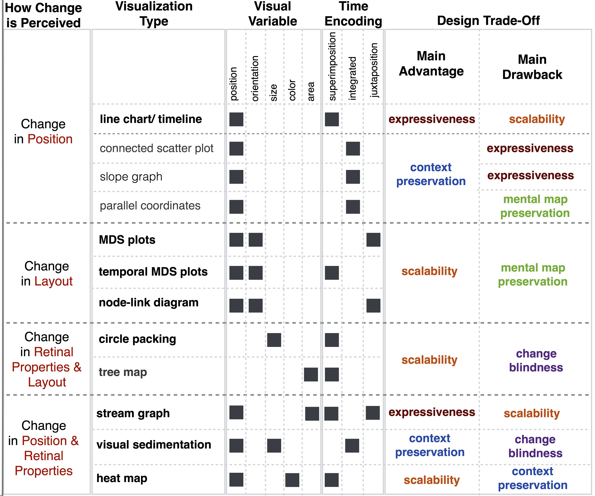

|
Aritra Dasgupta
Assistant Professor
College of Computing
NJIT
aritra.dasgupta@njit.edu
I help people see through complex information using visual and interactive means.
Google Scholar
Twitter
LinkedIn
ResearchGate
CV
My research interests lie at the cross-cutting areas of information visualization, visual analytics, human-centered data science and human-computer interaction.
Background
Currently (since Fall 2018) at NJIT, I am leading the development of a new research program around data visualization and visual analytics.
Before restarting my academic journey, I spent three productive years as a research scientist at PNNL, where
I had the pleasure of collaborating with experts from diverse backgrounds such as biology, climate science, machine learning, cyber security, etc. I led multiple interdisciplinary projects funded by the DOE's Lab-Directed Research and Development Program.
|
I am seeking highly motivated PhD students (fully funded positions) to work with me on projects related to the issues of trust, transparency, and interpretability in human-data interaction. The goals of these projects will be to develop and evaluate novel visualization and visual analytic techniques for making data accessible, interpretable, and actionable to people with diverse backgrounds and skills.
Please contact me directly or look at this document for more details about these positions.
Recent Research Highlights
| Visualization tool for interacting with
model explanations |
Effects of transparency in
analytical systems
|
Evaluating experts' visualization
task accuracy and preferences |
Design space of visualizations for change perception |
|
 |
 |
 |
| J. Krause, A. Dasgupta, J. Swartz, Y. Aphinyanaphongs, and E. Bertini.
"A Workflow for Visual Diagnostics of Binary Classifiers using Instance-Level Explanations."
IEEE VAST, 2017. |
A. Dasgupta, J. Lee, R. Wilson, R. Lafrance, N. Cramer, K. Cook,
and S. Payne. "Familiarity Vs Trust: A Comparative Study of Domain Scientists' Trust in
Visual Analytics and Conventional Analysis Methods.” IEEE TVCG, 2017.
|
A. Dasgupta, S. Burrows, K. Han, and P. J. Rasch.
“Empirical Analysis of the Subjective Impressions and Objective Measures of Domain
Scientists’ Visual Analytic Judgments.” ACM CHI, 2017. |
A. Dasgupta, D. Arendt, L. Franklin, P. C. Wong, and K. Cook.
“Human Factors in Streaming Data Analysis: Challenges and Opportunities for Information visualization.”
CGF, 2018.
|
Research Areas
Interactive Visual Comparison
Let domain scientists reason about computational model behavior and help them select the most accurate models by interactively comparing multiple facets of model performance.
[EuroVis14] [TVCG14] [CISE15] [InfoVis19]
Model Explainability and Trust
Provide domain experts and model developers with tools that
explain the decisions of machine learning models and help them semantically validate models.
[HILDA17] [TVCG17] [VAST17] [UIST18]
High-Dimensional Pattern Search
Provide guidance to analysts for finding patterns in high-dimensional
subspaces by devising metrics that quantify salient patterns.
[InfoVis10] [LDAV12] [CGF2015] [LDAV2016]
|
Research Areas
Studies on Visualization Effectiveness
Conduct user studies with experts from biology and climate science
domains to evaluate if and how optimal visualization design can overcome potential biases due to familiarity.
[TVCG16] [CHI17] [Chapter 6,Cognitive Biases Book 18] [TVCG19]
Visualization Perception & Design Analysis
Study and survey of the visualization design space for devising classification schemes
that bridge human perception with visual encodings.
[TVCG15] [CGF17]
Privacy-Preserving Data Visualization
Adapt visualizations to prevent disclosure of sensitive information by developing
information loss metrics that can help address the trade-off between privacy gain and loss of utility due to anonymization.
[InfoVis11] [CGF12] [CGF13] [EHRVis14]
|
Invited Talks
Nov 2018: At Tapestry 2018 on visual communication in science domains
Feb 2018: At NJIT on trust and transparency in human-data interaction
Nov 2017: At Duke University on explanatory visualizations for model understanding
October 2017: Presentation at IEEEVIS 2017 DECISIVe Workshop on cognitive biases in visualization
August 2016: Invited Lecture on visualization design at UC-San Diego
|
| |